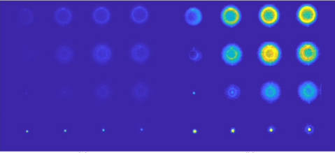
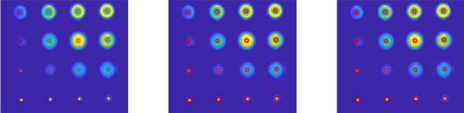
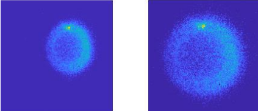
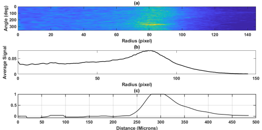
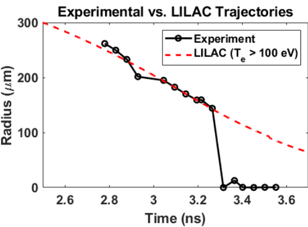

An automated MATLAB image-analysis pipeline developed at the University of Rochester's Laboratory for Laser Energetics to extract implosion trajectories from time-resolved x-ray self-emission and benchmark hydrodynamic simulations.
Hydrodynamic simulations are fundamental to designing and understanding inertial confinement fusion experiments. To evaluate whether a simulation is accurately modeling an implosion, I developed a way to extract the target's trajectory directly from experimental self-emission images and compare it against the predicted trajectory from 1D LILAC simulations.
The challenge was turning noisy framing-camera images into a reliable measurement of the position of the imploding emission edge over time — automatically and consistently across an image set.

I built the analysis as a staged pipeline. Each framing-camera image was cleaned and divided into its 16 time-resolved frames, the target center was detected and corrected, and each centered frame was transformed into a radial representation from which the emission-edge position could be extracted.
The initial circle detector did not always place each center accurately. I used the known 4 × 4 geometry of the framing-camera data to fit an evenly spaced grid to the detected positions. When a detected center deviated from its corresponding fitted-grid position by more than a threshold, the grid estimate replaced it, producing more consistent centered sub-images for the downstream analysis.


Once each frame was centered, I unwrapped it from Cartesian into polar coordinates and averaged the signal over angle while excluding the bright target stalk. An Abel inversion then recovered a radial emission profile under the assumption of spherical symmetry.
I defined the emission-edge position as the midpoint of the profile's rising edge. Repeating this process across the time-resolved frames produced the experimental radius-versus-time trajectory.

The extracted experimental trajectory was compared against a corresponding 1D LILAC hydrodynamic simulation. The two trajectories showed good agreement until approximately 3.3 ns, when the forming central hot spot became bright enough to dominate the self-emission signal and the ablation-front position could no longer be reliably tracked.

The program was then tested and showed agreement on multiple other image sets, and was eventually employed in march 2026 with the deployment of Germanium-doped ablators.
I documented the motivation, algorithm, validation, limitations, and potential improvements in a full technical paper written during the research program.